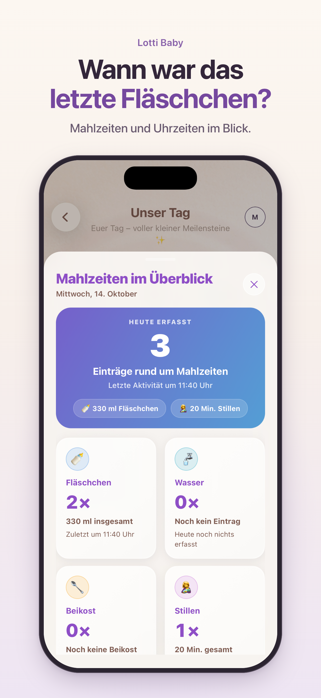

02 STILLEN & MAHLZEITEN
Wann war die letzte Mahlzeit? Ein Blick genügt.
Gerade nachts verschwimmen die Uhrzeiten schnell. Ein Stillprotokoll hält fest, was schon war. Mit Lotti Baby dokumentiert ihr Stillen, Fläschchen und Abpumpen und schaut die Einträge später in Ruhe nach.
Lotti Baby im App StoreFür iPhone und iPad. Anmeldung erforderlich. Der Funktionsumfang hängt vom gewählten Abonnement ab; Preise und Laufzeiten seht ihr vor dem Kauf in der App.

IM ALLTAG
Euer Stillprotokoll in wenigen Schritten
Mahlzeit erfassen
Wählt im Tagesüberblick Stillen, Fläschchen oder Abpumpen aus. Haltet die Angaben fest, die für euren Alltag hilfreich sind.
Später nachschauen
In der Mahlzeitenübersicht seht ihr die letzte erfasste Mahlzeit. Bei Fläschchen könnt ihr die eingetragenen Mengen im Blick behalten.
Gemeinsam den Überblick behalten
Verknüpft eure Accounts und nutzt die Baby-Daten gemeinsam. So kann auch das andere Elternteil nachsehen, was bereits eingetragen wurde.
Ein Baby Tracker für mehr als Stillzeiten
Auch Beikost, Windeln und Schlaf finden in Lotti Baby ihren Platz. Ihr entscheidet, was ihr dokumentieren möchtet. Das Protokoll hilft beim Erinnern und bei der Übergabe zwischen euch – es macht keine Vorgaben für euren Familienalltag.